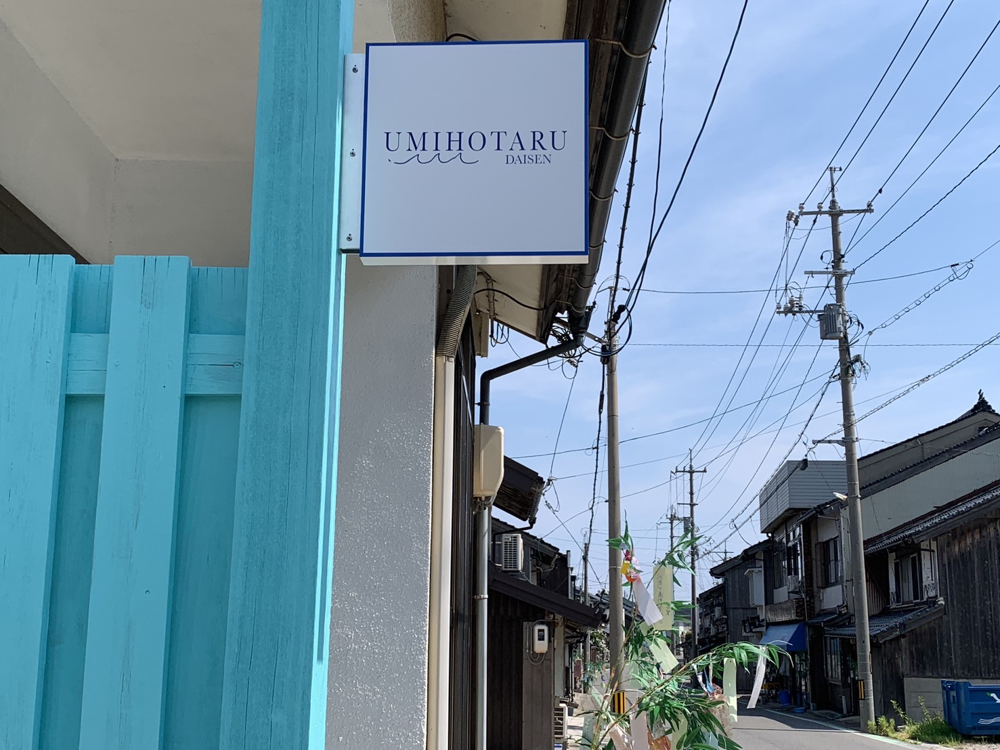

01
The Story
港町の時の流れが、
静かに落ち着く場所。
鳥取県大山町、御来屋（みくりや）。
サザエなどで知られるこの漁港のまちに、静かに佇む一軒の家があります。
築40年の風合いを残す建物に、静かに寄り添う白と青の看板が目印。
扉を開くと、潮風と波の音がゆっくりと奥へと導いていく。

そこは、少し不思議な家。
2階へ続く階段が2つあり、まるで迷路のように部屋と部屋が繋がっています。
窓の外に広がるのは、遮るもののない日本海。
ただ波音に耳を傾け、刻一刻と変わる海の色を眺める。
「泊まる」のではなく、この町で「暮らす」ような旅を。